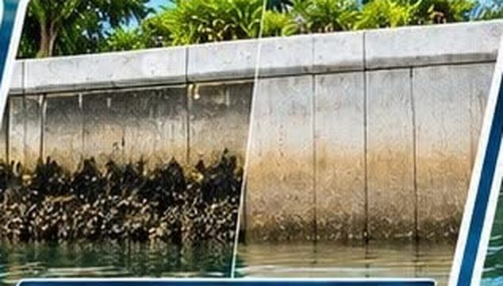

Barnacles vs. Oysters: What Is Growing on Your Seawall?

If you own a waterfront home anywhere from Clearwater to Bradenton, your seawall has a band of crusty growth at the waterline. Most people call all of it barnacles. In reality you are usually looking at a mix of barnacles, oysters, algae and slime, and each one behaves a little differently.
Barnacles
Barnacles are small, volcano shaped shells that cement themselves to hard surfaces. They are sharp, they grow fast in warm water and they attach to everything: seawalls, pilings, ladders, lift cradles and boat hulls. On a ladder or swim platform they are a real cut hazard.
Oysters
Oysters grow in clusters and can build thick, heavy layers on seawalls and pilings in the tidal zone. They are especially common in canal communities with brackish water. Heavy oyster growth adds weight to structures, traps moisture and can hide cracks in a seawall face or rot in a wood piling.
Algae and slime
Green and brown algae and biofilm coat docks, steps and the upper part of seawalls. They make walking surfaces slippery and stain concrete and wood. Algae is the first thing to come back after a cleaning, which is why regular service matters.
Mold and mildew
On shaded dock boards and railings, mold and mildew create black and gray staining that breaks down wood finishes over time.
Why it matters for your property
- Safety: sharp shells and slick surfaces cause cuts and falls.
- Hidden damage: growth hides cracks, spalling and rot until repairs get expensive.
- Wear: growth on lifts and bunks scratches hulls and strains motors and cables.
- Curb appeal: a clean wall and dock make a waterfront home look cared for.
What to do about it
A professional cleaning removes all of it down through the tidal zone, then a maintenance schedule keeps it from building back up. Text us a photo of your seawall and we will tell you what you have and what it takes to clean it.
Frequently Asked Questions
Are barnacles bad for my seawall?
Barnacles themselves rarely break a wall, but heavy barnacle and oyster growth hides cracks and joint failures that need attention.
Why do oysters grow on my seawall?
Oysters settle on hard surfaces in the tidal zone, especially in warm, brackish canal water common across Tampa Bay.